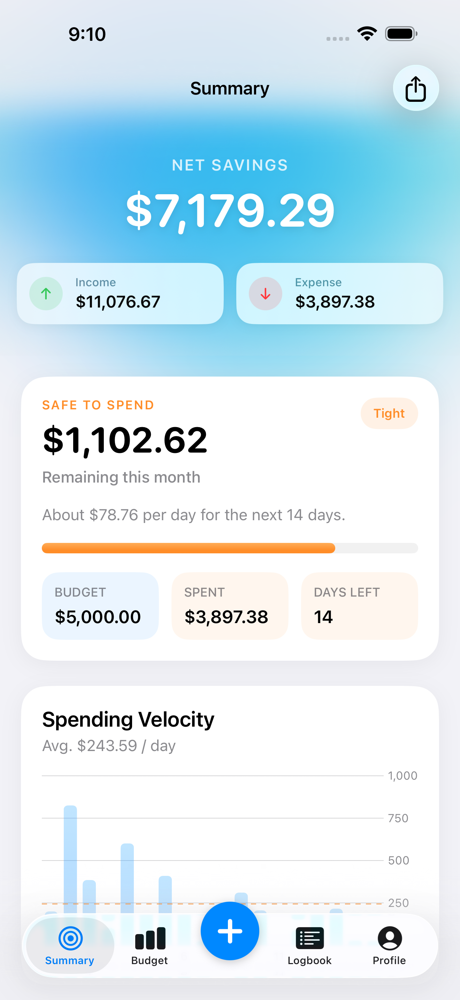

01 · Plan
Give each category a limit.
Decide how much to allocate to groceries, transport, and other household spending before the month gets busy.
FamilyFund is a family budget and expense-tracking app for iPhone and iPad. Set category limits, record income and expenses, and review what remains available to spend this month.
View FamilyFund on the App Store ↗Free download · Optional premium subscriptions

Decide how much to allocate to groceries, transport, and other household spending before the month gets busy.
Record your spending and income as you go. Category totals help you keep the monthly picture useful.
Compare spending with your limits before making the next purchase or adjusting your plan.
A fictional grocery budget shows the basic idea: choose a category limit, record spending, and review the difference. These figures illustrate budgeting; they are not customer results or a promise of savings.
Use FamilyFund to organise the expenses you manage for your household. Personal iCloud sync, when enabled, uses your Apple account. Sharing with another person is a separate workflow; this page does not promise automatic access for every family member.
Want to understand storage and optional analytics? Read how FamilyFund handles expense data.
FamilyFund is available for iPhone and iPad. Check the App Store listing for the current operating-system requirements.
You can enter transactions manually. Receipt recognition can prefill expense details, which you should check and correct before saving.
Yes. Category budgets and expense tracking let you review spending against the monthly plan.
The app is free to download and offers premium subscriptions. Apple’s purchase screen shows current pricing, billing periods, offers, and eligibility. Review those details before purchasing.
Review the current features and compatibility on the App Store.
Explore the app ↗